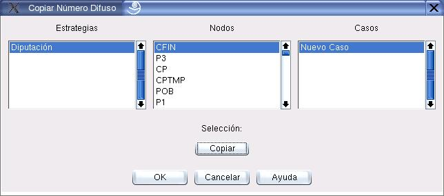

Copiar Números Difusos
El cuadro de diálogo que muestra la figura 7.4 permite copiar un número difuso presente en un nodo cualquiera. El usuario debe seleccionar primero la Metodología, el Nodo y el Caso de donde quiere copiar el número. Posteriormente debe seleccionar la opción Copiar.
Figura 7.4:
Diálogo para copiar números difusos
|

|
Oscar Duarte
2005-10-17